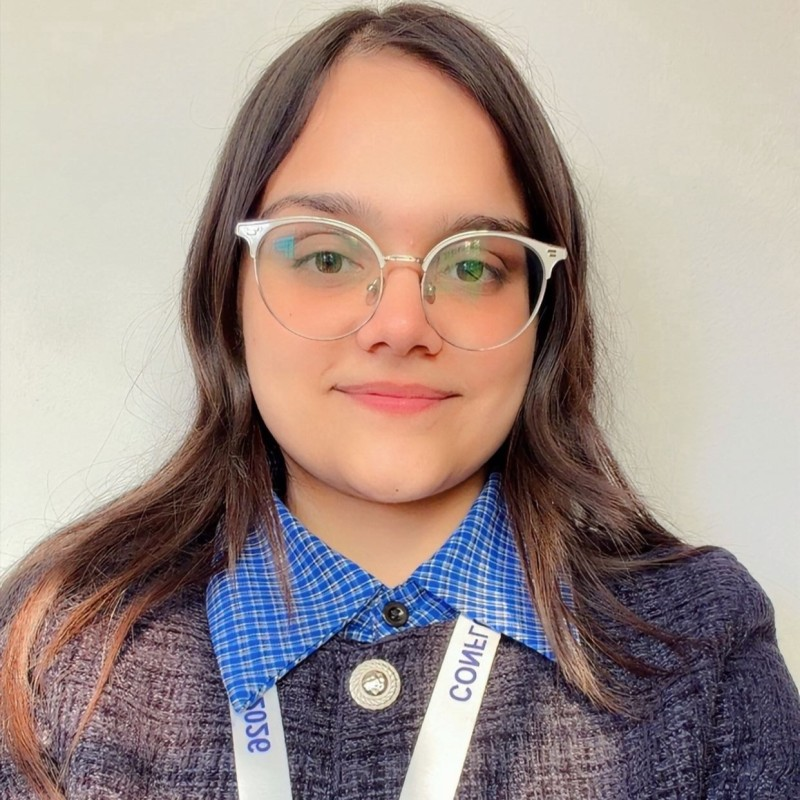
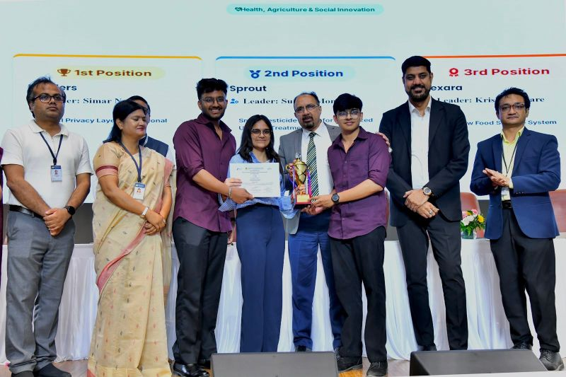
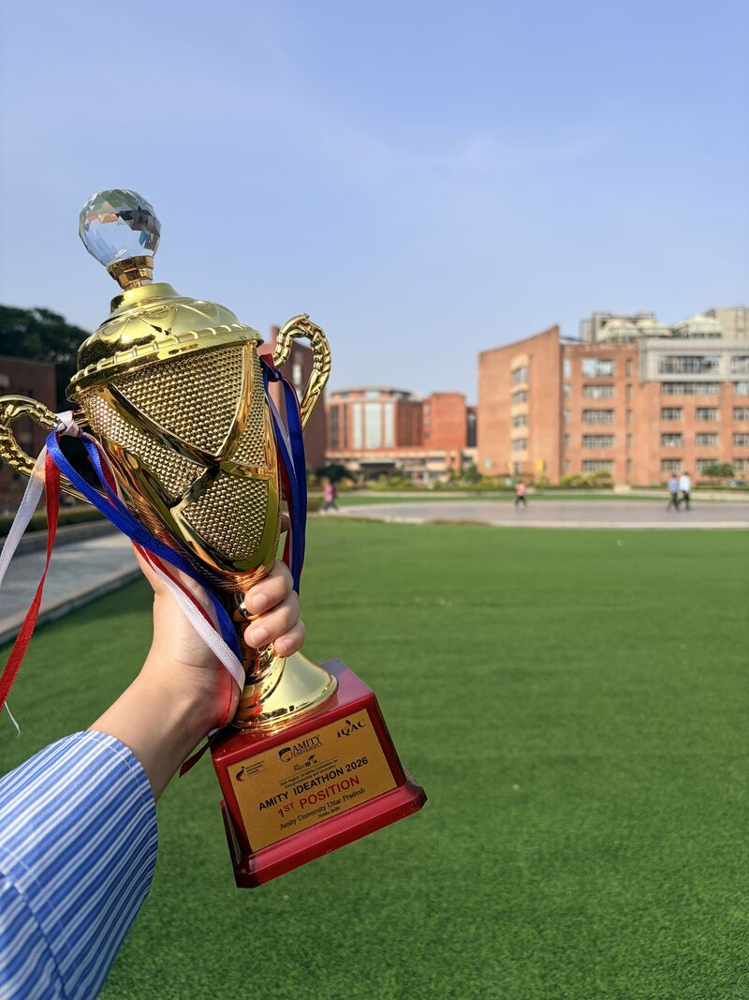
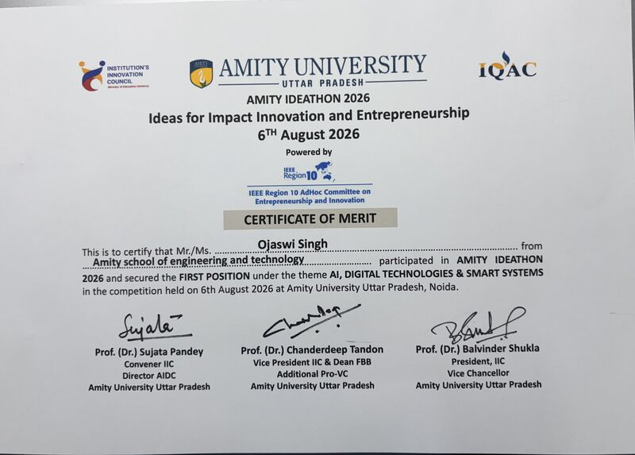
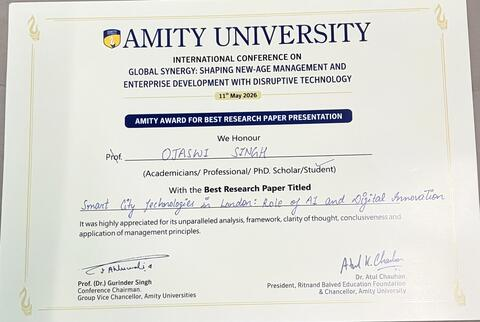
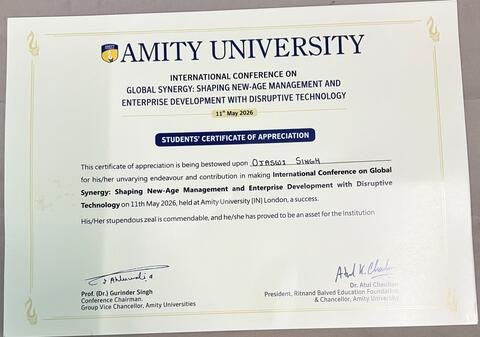
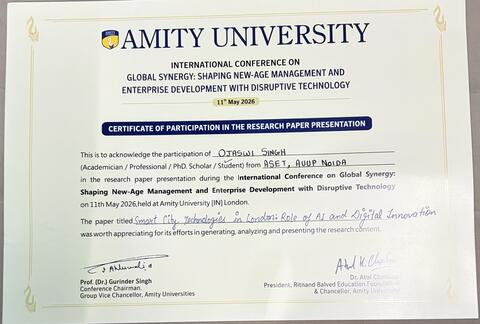
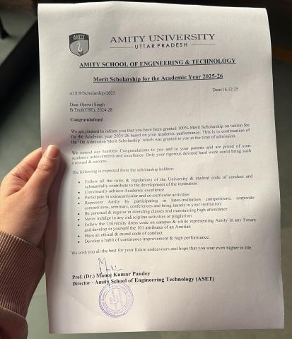

Amity University
2024–2028
B.Tech, Computer Science · Minor in AI & Machine Learning
Noida, Uttar Pradesh
- CGPA: 9.44/10 (current)

AI Research Intern · Computer Vision · NLP
Pre-final-year B.Tech CSE (AI/ML) student at Amity University, currently researching blur-aware transformer architectures for monocular depth estimation — alongside NLP, community leadership, and a growing open-source portfolio.
"Pre-final-year B.Tech CSE (AI/ML) student with interests in Machine Learning, Deep Learning, Computer Vision, and Generative AI."
Currently working as an AI Research Intern, developing a research project on single-image depth-from-defocus estimation using blur-aware transformer architectures. Also built an AI-based fake news and propaganda detection system using NLP and machine learning, achieving over 95% classification accuracy. Beyond research, serves as Operations Manager at Microsoft Tech Community, contributing to technical events, community initiatives, and student engagement — while continuing to strengthen DSA, AI/ML, and software development skills.
A comparative study of seven CNN and Transformer backbones for estimating a dense depth map from a single RGB image, trained on NYU Depth V2 under identical conditions with a shared decoder — isolating the encoder as the only variable.
NLP classifier separating credible reporting from propaganda-risk content.
TF‑IDF, Logistic Regression & Linear SVM on 72,000+ articles · Streamlit app for real-time credibility scoring.
vGRF-based gait cycle segmentation pipeline, IIT Kharagpur dataset.
Ground-reaction-force gait cycle detection across multiple subjects (Sub01–Sub05, healthy & affected groups).
A trio of applied AI tools built during the CodeAlpha internship, each shipped with a Gradio interface.
Multi-object tracking with persistent IDs, a 35-FAQ university support bot, and an auto-detect translation interface — all runnable from Google Colab.
 Python
Python C++
C++ Java
Java C
C TensorFlow
TensorFlow OpenCV
OpenCV Scikit-Learn
Scikit-Learn Pandas
Pandas NumPy
NumPy Streamlit
Streamlit Git
Git
 GitHub
GitHub
 VS Code
VS Code
 Google Colab
Google Colab
 Jupyter
Jupyter






